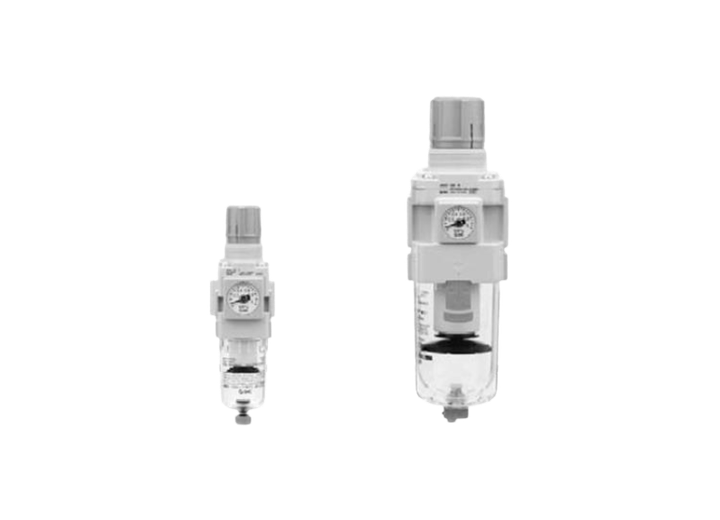

Suministros industriales
Consumibles industriales
Consumibles industriales - para línea y taller. Producto de Suministros industriales. KDL ayuda a validar compatibilidad, disponibilidad y alternativas para mantenimiento industrial.

Datos para cotizar
- Descripción de la pieza
- Marca / No. de parte
- Cantidad
- Medidas
- Aplicación